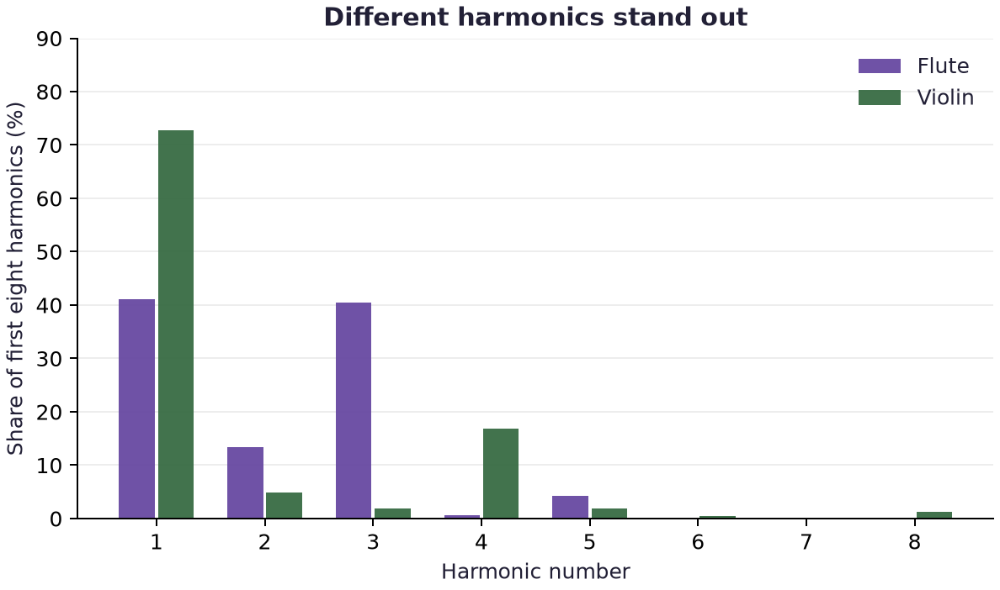

Advanced mathematics · Fourier series
Same note,
different sound.
Why do a flute and a violin sound different when they play the same note?
Listen first
A4Play the same note on two instruments.
Flute · Sonja Feig
Violin · Josue Jean-Francois
Analysis 1
Are the pitches the same?
A4 is the musical note with a reference frequency of 440 Hz. That means the air pressure goes through about 440 cycles each second.
I used a fast Fourier transform (FFT) in Python to see which frequencies were present. The biggest peak near 440 Hz gives my estimate of the fundamental frequency, the rate at which the sound repeats.
The flute came in at 442 Hz and the violin at 438 Hz. Both were within 2 Hz of the A4 reference.

Analysis 2
What gives each instrument its sound?
Along with the fundamental, an instrument produces harmonics at whole-number multiples of that frequency. For A4, those are about 440, 880 and 1,320 Hz for the first three harmonics.
I measured the power within 15 Hz of each of the first eight harmonics. I then divided by their combined power so I could compare the mix for each instrument.
The flute’s first and third harmonics accounted for 41.0% and 40.5% of the measured power. The violin’s first harmonic accounted for 72.7% and its fourth for 16.9%.

Hear what extra harmonics do
Both of these synthetic sounds start with 440 Hz. The second adds 880 and 1,320 Hz. In the time the 440 Hz wave makes one cycle, the other waves make exactly two and three. The whole sound repeats at the same rate.
Conclusion
Pitch tells you the note. Harmonics help explain the sound.
Both instruments were close to 440 Hz, but their power was spread differently across the harmonics. That difference in the mix helps explain why the recordings sound distinct even though both are A4.
The comparison uses a small set of recordings. Playing technique and the way a note starts and ends can also change how it sounds.
Data and method
I used two recordings from the University of Iowa Electronic Music Studios collection curated by Lawrence Fritts. Both are marked mezzo-forte, or moderately loud. The flute was played without vibrato, and the violin was bowed on the A string.
I selected one steady second of A4 from each recording. Both recordings contain 44,100 samples per second. Before the FFT, I applied a Hann window, which tapers the edges of the clip so the cut introduces less distortion in the spectrum.
University of Iowa Musical Instrument Samples
How does this connect to Fourier series?
Chapter 6 shows how a repeating signal can be described as a sum of sine and cosine waves. Each wave repeats at the fundamental frequency or a whole-number multiple of it. The example on page 32 shows how a Fourier transform can reveal three frequencies mixed into one signal.
x(t) ≈ a0 + ∑k=1K [ak cos(2πkf0t) + bk sin(2πkf0t)]
f0 is the fundamental frequency and k is the harmonic number. The sine and cosine weights tell us how much each harmonic contributes. The FFT works on the sampled recording and estimates which frequencies are present.